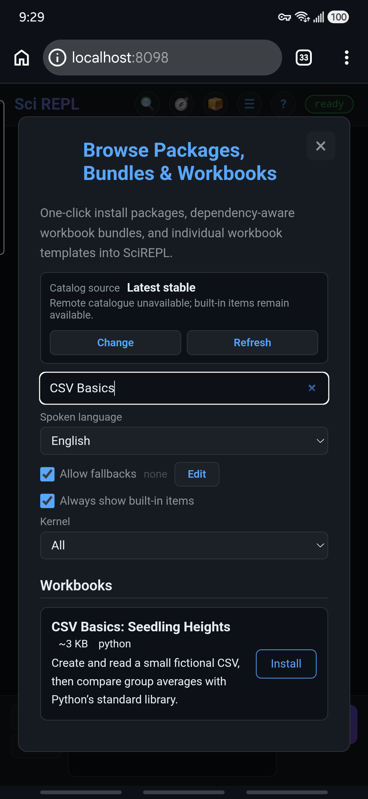
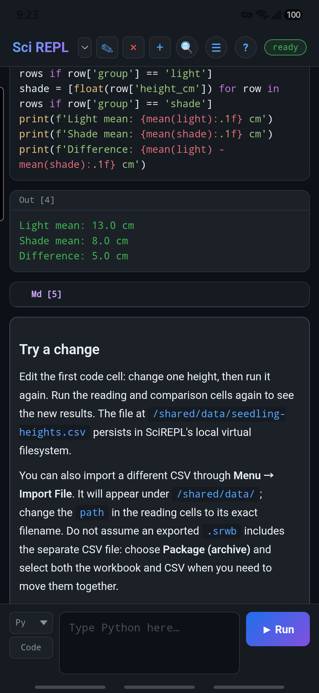
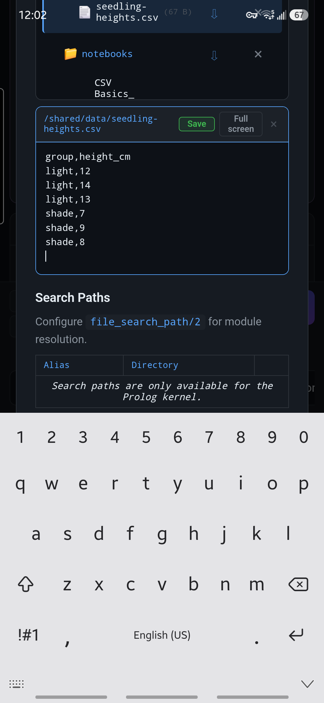
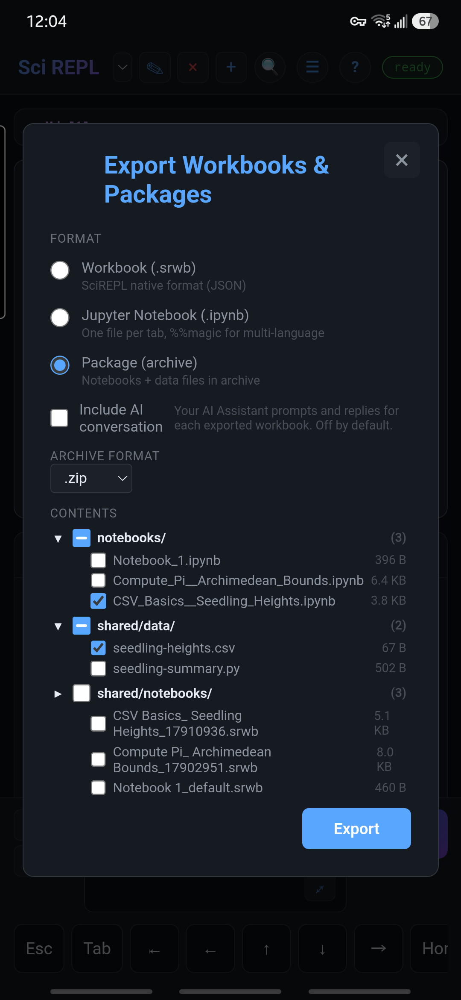
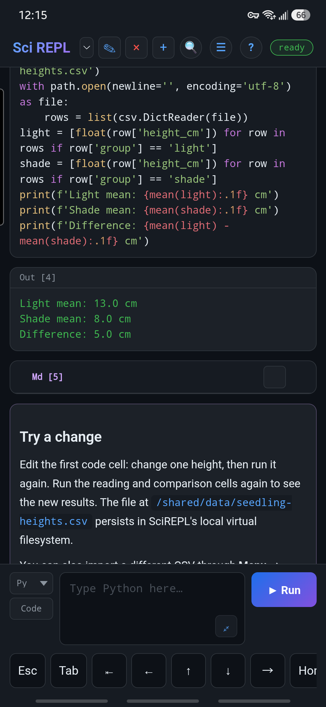

Learn by doing
Explore a CSV in a workbook
Start in Browse Packages, Bundles & Workbooks. Install a small example, run its cells, edit its CSV, then export and reopen the workbook with its data. The data is fictional and the Python code needs no extra packages or AI account.
Screenshots were captured on a Samsung Galaxy S24-series phone. The Browse and initial-output pictures show Free; the new file-editor and package-selection pictures show Pro 1.4.0 and are labelled below. In Pro, you can use the direct workbook download and Import File path; the surrounding controls may differ, and this new Browse entry may not be present there.
Don't see this workbook in Browse yet? The example is built into Free 1.4.0 and later; an older installed app or cached PWA may not list it. Download the workbook directly, then use Menu → Import File to open it. You can follow the rest of this lesson now.
Step 1
Find the workbook in Browse
- Open Menu → Browse Packages, Bundles & Workbooks. The optional 📦 header shortcut opens the same screen if it is visible.
- Search for CSV Basics. Under Workbooks, find CSV Basics: Seedling Heights. It is a built-in English example, not a package that needs installing into Python.
- Tap Install. The workbook normally becomes the selected tab. If you turned off automatic switching, use the workbook selector to choose it.

If a Privacy Policy appears: Browse may check the verified catalogue online. Read the disclosure, scroll inside the dialog to the bottom, and tap I Understand only if you agree. You may instead close the notice and still use built-in entries; the remote catalogue will be unavailable. This example itself needs no external dataset or Python package.
Installing a workbook adds its cells; it does not run them. That lets you inspect code before executing it.
Step 2
Run the cells in order
The opening text explains the sample. The three Python cells each have a name: create_csv, read_csv, and compare_groups. For a saved cell, tap its ✎ pencil to open the editor, then tap that cell’s Run. In Pro you can also double-tap the cell’s code to edit it.
- Run
create_csv. It writes six fictional rows to/shared/data/seedling-heights.csv. You should seeSaved 6 fictional rows. - Run
read_csv. It opens the file just created and prints all six rows. - Run
compare_groups. It prints a light mean of 13.0 cm, a shade mean of 8.0 cm, and a difference of 5.0 cm.
The file is also visible in Menu → Files & Storage. You can read it there, or use Edit and Save to change it directly. The next step shows how.
The final output should look like this:
Light mean: 13.0 cm
Shade mean: 8.0 cm
Difference: 5.0 cmFirst run slower? Python may take a moment to initialize. Wait for the status badge to say ready before judging whether a cell finished. Later cells normally reuse the loaded runtime. If a runtime download needs consent, read the privacy notice before accepting; this workbook does not call %pip install.

These made-up values illustrate reading and calculating, not a scientific conclusion about light and plant growth.
Step 3
Change one value and rerun
You do not have to edit the Python cell to change its data. Open the CSV itself:
- Choose Menu → Files & Storage (the menu may add VFS / Paths to the name).
- Choose / (Persistent Storage) or All Filesystems. Scroll to
/shared/data/seedling-heights.csvand tap the filename, not its download or remove icon. - Tap Edit. Change the row
light,14tolight,15. Keep the headergroup,height_cm, commas, and other rows unchanged. - Tap Save, then close Files & Storage. Saving a file does not run any code.


Rerun only read_csv and compare_groups. The light mean is now about 13.3 cm and the difference about 5.3 cm. Do not rerun create_csv: it would overwrite your file edit with the values still in that cell.
Alternatively, edit create_csv with its ✎ pencil, change its measurement 14 to 15, and run all three Python cells in order. This changes the code that generates the file, rather than just the file.
Why rerun the later cells? Their saved output is a record of the previous execution; changing a file does not automatically recalculate earlier results. Each cell reads the file when you run it.
Step 4
Import the original CSV
- Download the original sample CSV to a folder your device’s file picker can open.
- In SciREPL, choose Menu → Import File and select
seedling-heights.csv. The confirmation should say it was uploaded to/shared/data/seedling-heights.csv. - This replaces the changed local file with the original six rows. Rerun
read_csvandcompare_groups; the two means should return to 13.0 and 8.0 cm.
Important: Do not rerun create_csv after importing a different file with the same name unless you intend to overwrite it. For your own CSV, note the exact confirmation path and change the path in the reading cells to that filename. The file picker may show Android Downloads, a cloud provider, or both.
Step 5
Save a portable copy
Open Menu → Export Workbooks & Packages. If you want only the cells, choose Workbook (.srwb) and Current tab only. An .srwb does not include the separate CSV in SharedVFS.
To move the workbook with its data, choose Package (archive) and keep .zip. In the Contents tree, select:
- The workbook
CSV_Basics__Seedling_Heights.ipynbunder notebooks/. Package export stores the cells in Jupyter notebook format. - The file
seedling-heights.csvunder shared/data/.
Uncheck unrelated workbooks and files. Expand folders with their arrow if needed; do not assume Current tab only limits a package's contents. You do not need the extra shared/notebooks/ copies for this lesson. In Pro, leave Include AI conversation unchecked unless you deliberately want to share it.
Tap Export. On Android this opens the share sheet: save the archive somewhere you can find again, such as your own drive or a file manager's save destination. In a browser it downloads a file. The suggested filename is scirepl_package.zip; renaming it seedling-project.zip makes it easier to recognize.

Local recovery is not a backup. Android app storage, the PWA in Chrome, and another browser do not automatically share these files. Keep the exported copy somewhere you control. See Files, import, and export for other formats.
Step 6
Reopen the package and check both parts
Before trusting a backup, check that you can open it. You can do this in another SciREPL installation or browser profile. Importing here adds another workbook; it also replaces files at the package's destination paths, so keep a separate copy of any newer file before importing an older package.
- Choose Menu → Import Package (.zip / .tar.gz) and select the archive you saved. For this lesson it is a
.zip, not the separate CSV or.srwbdownload. - Choose the newly imported CSV Basics: Seedling Heights workbook if it is not selected automatically. If you imported into the same app, the old and new tabs may have the same name.
- Open Menu → Files & Storage and check
/shared/data/seedling-heights.csv. Its six rows should match the file you exported. Close the preview after checking. - Run the second Python cell (the
read_csvcode), then the third Python cell (thecompare_groupscode). Package export uses Jupyter format and may not preserve the cell names; identify these by their order and code. After Step 4's original CSV, expect 13.0 cm, 8.0 cm, and 5.0 cm. If you exported the editedlight,15file instead, expect 13.3 cm, 8.0 cm, and 5.3 cm.
Do not rerun create_csv for this restore check. It overwrites the imported data with the values in its code. Reading the restored CSV first proves the data travelled with the workbook; old saved output alone does not prove that.

If the file is missing, or the workbook is absent, return to Step 5 and check that both entries were selected. A plain workbook export cannot carry the CSV for you.
What next?
Try a CSV of your own. Keep the columns group and height_cm, use numeric heights, and include at least one light and one shade row—or adapt the two group filters in compare_groups. You can inspect the local file under Menu → Files & Storage. For the phone controls used here, see the first-workbook interface walkthrough.